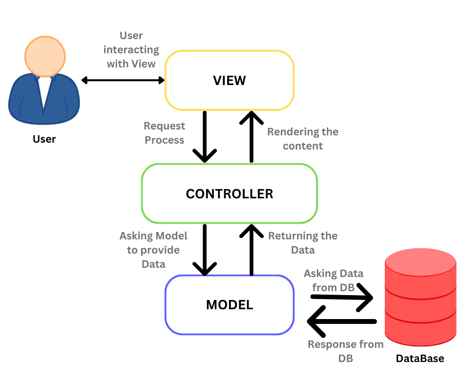

El modelo MVC (Modelo-Vista-Controlador) es un patrón de arquitectura de software que separa una aplicación en tres componentes principales: el Modelo, la Vista y el Controlador. Este patrón facilita la organización del código y la reutilización de componentes, lo que lo hace ideal para el desarrollo de aplicaciones web.
El Modelo es la parte de la aplicación que maneja la lógica de negocio y los datos. En términos sencillos, se encarga de gestionar cómo se guardan, recuperan y manipulan los datos. Por ejemplo, en una aplicación de tienda en línea, el Modelo podría manejar las operaciones relacionadas con los productos, como agregar nuevos productos, calcular precios, o manejar inventarios.
Ejemplo práctico:
La Vista es la capa de la aplicación que se encarga de presentar los datos al usuario. Es la interfaz gráfica de usuario (UI) de la aplicación, que se puede ver e interactuar. La Vista recibe los datos del Modelo y los muestra al usuario, además de recibir las interacciones del usuario (clics, entradas de texto, etc.) y enviarlas al Controlador.
Ejemplo práctico:
El Controlador es el intermediario entre el Modelo y la Vista. Se encarga de recibir las entradas del usuario desde la Vista, procesarlas y luego enviar la información apropiada al Modelo o actualizar la Vista en consecuencia. Es el encargado de dirigir el flujo de la aplicación.
Ejemplo práctico:
Un diagrama simple puede ayudar a entender cómo interactúan el Modelo, la Vista y el Controlador:
En el diagrama: